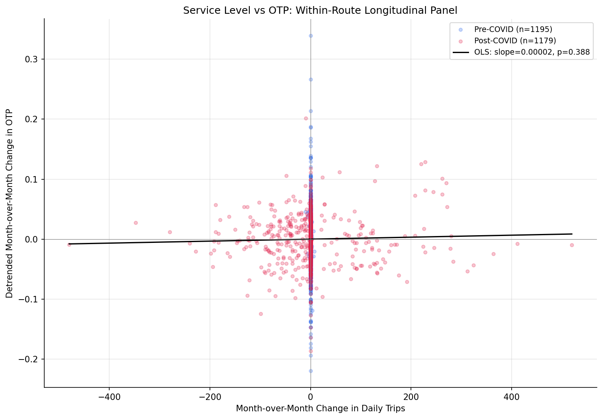

Analysis
30 - Service Level vs OTP Longitudinal
Equity and Strategic Planning
Data Provenance
flowchart LR 30_service_level_otp_longitudinal["30 - Service Level vs OTP Longitudinal"] t_otp_monthly["otp_monthly"] --> 30_service_level_otp_longitudinal 01_data_ingestion["Data Ingestion"] --> t_otp_monthly t_routes["routes"] --> 30_service_level_otp_longitudinal 01_data_ingestion["Data Ingestion"] --> t_routes t_scheduled_trips_monthly["scheduled_trips_monthly"] --> 30_service_level_otp_longitudinal 02_scheduled_trips["Scheduled Trips ETL"] --> t_scheduled_trips_monthly d1_30_service_level_otp_longitudinal["numpy (lib)"] --> 30_service_level_otp_longitudinal d2_30_service_level_otp_longitudinal["polars (lib)"] --> 30_service_level_otp_longitudinal d3_30_service_level_otp_longitudinal["scipy (lib)"] --> 30_service_level_otp_longitudinal classDef page fill:#dbeafe,stroke:#1d4ed8,color:#1e3a8a,stroke-width:2px; classDef table fill:#ecfeff,stroke:#0e7490,color:#164e63; classDef dep fill:#fff7ed,stroke:#c2410c,color:#7c2d12,stroke-dasharray: 4 2; classDef file fill:#eef2ff,stroke:#6366f1,color:#3730a3; classDef api fill:#f0fdf4,stroke:#16a34a,color:#14532d; classDef pipeline fill:#f5f3ff,stroke:#7c3aed,color:#4c1d95; class 30_service_level_otp_longitudinal page; class t_otp_monthly,t_routes,t_scheduled_trips_monthly table; class d1_30_service_level_otp_longitudinal,d2_30_service_level_otp_longitudinal,d3_30_service_level_otp_longitudinal dep; class 01_data_ingestion,02_scheduled_trips pipeline;
Findings
Findings: Service Level vs OTP Longitudinal
Summary
Within-route month-over-month changes in scheduled trip frequency have no significant relationship with OTP changes after detrending. This null result holds across all routes, bus-only, and in both pre- and post-COVID subperiods.
Key Numbers
- 2,374 delta observations from 93 routes over 27 months (Jan 2019 -- Mar 2021)
- All routes: slope=0.00002, Pearson r=0.018 (p=0.39), Spearman rho=-0.030 (p=0.15)
- Bus only (n=2,288): slope=0.00002, Pearson r=0.023 (p=0.26), Spearman rho=-0.031 (p=0.13)
- Pre-COVID (n=1,195): slope=-0.004, r=-0.052 (p=0.07) -- marginally negative
- Post-COVID (n=1,179): slope=0.00002, r=0.030 (p=0.31) -- null
Observations
- The overall effect is essentially zero: a change in daily trip count explains less than 0.1% of the variance in detrended OTP changes.
- This confirms Analysis 10's cross-sectional null finding with a stronger longitudinal design that controls for all time-invariant route characteristics (geography, length, mode).
- The pre-COVID period shows a marginally significant negative slope (r=-0.052, p=0.07), suggesting that adding trips slightly degraded OTP when the system was running near capacity. However, this is borderline and does not survive Bonferroni correction for multiple comparisons.
- The post-COVID period shows no relationship at all, consistent with reduced ridership creating slack in the system.
- The Spearman correlations are consistently negative but not significant, hinting that the relationship (if any) is slightly negative -- more service slightly worsens on-time performance -- but the effect is too small to detect reliably in this sample.
Discussion
This null result is the most methodologically rigorous frequency-OTP test in the project. Analysis 10 was cross-sectional (comparing different routes at one point in time) and confounded by route characteristics -- long routes have both more trips and worse OTP for structural reasons. This analysis controls for all time-invariant route features by using within-route changes over time, and detrends to remove system-wide shocks. The result is unambiguous: trip frequency changes do not predict OTP changes within routes.
The marginally negative pre-COVID slope (r=-0.052, p=0.07) is the one signal worth noting. Before COVID, the system was operating near capacity, and adding trips to an already-constrained route may have slightly degraded schedule adherence -- each additional trip competes for the same road space, layover time, and driver availability. After COVID reduced demand, this constraint relaxed and the effect disappeared. This is consistent with a capacity-constrained model where frequency only matters at the margin when the system is near saturation, and is irrelevant otherwise.
The policy implication reinforces what emerged across Analyses 10, 26, and 29: scheduled service frequency is not a lever for OTP improvement. Routes don't get more on-time by running fewer trips, and they don't get less on-time by running more. The ~50% of OTP variance explained by the multivariate model (Analysis 18) comes from structural features (stop count, route length, mode), and the remaining ~50% likely reflects operational factors (schedule padding, driver availability, real-time traffic variability) that are orthogonal to how many trips are scheduled.
The 27-month window is a genuine limitation. A longer panel with more schedule variation -- particularly one that captures the post-2021 period when PRT may have restructured service -- could provide more statistical power. Extending the WPRDC data or obtaining historical GTFS archives would strengthen this null finding or reveal effects that 27 months cannot detect.
Caveats
- The panel covers only 27 months, limiting statistical power for detecting small effects.
- Month-over-month trip changes are often zero (same pick period), reducing the effective variation in the independent variable.
- OTP is measured monthly while schedule changes can occur mid-month, introducing measurement noise.
- System-wide detrending removes the COVID shock but may also remove genuine correlated service changes (e.g., if all routes cut service and all improved OTP simultaneously).
Output
Generated tabular or textual data artifact produced by this analysis.

Generated chart image produced by this analysis.
Generated tabular or textual data artifact produced by this analysis.
Methods
Methods: Service Level vs OTP Longitudinal
Question
Within the same route over time, does increasing or decreasing scheduled trip frequency predict OTP changes? This is a within-route panel design that controls for all time-invariant route characteristics (length, geography, mode).
Approach
- Join
scheduled_trips_monthly(WEEKDAY) withotp_monthlyon (route_id, month) for the 27-month overlap (Jan 2019 -- Mar 2021). - Compute month-over-month changes within each route: delta_trips and delta_otp.
- Remove the system-wide trend by subtracting the monthly mean delta_otp across all routes (detrending), so we isolate route-specific effects.
- Estimate a fixed-effects panel regression: detrended delta_otp ~ delta_trips, with route fixed effects (route demeaning).
- Also compute Pearson and Spearman correlations between delta_trips and detrended delta_otp.
- Stratify by mode (bus-only) and by period (pre-COVID vs post-COVID onset).
- Scatter plot: delta_trips vs detrended delta_otp, with regression line and confidence band.
Data
| Name | Description | Source |
|---|---|---|
scheduled_trips_monthly |
WEEKDAY daily trip counts per route per month (Jan 2019 -- Mar 2021) | prt.db table |
otp_monthly |
Monthly OTP per route | prt.db table |
routes |
Mode classification for bus-only stratification | prt.db table |
Output
output/service_level_panel.csv-- route-month panel with delta_trips, delta_otp, detrended delta_otpoutput/service_level_scatter.png-- scatter of delta_trips vs detrended delta_otp with regression lineoutput/service_level_summary.csv-- regression and correlation results
Sources
| Name | Type | Description |
|---|---|---|
| otp_monthly | table | Monthly OTP values by route. Produced by Data Ingestion. |
| routes | table | Route dimension table. Produced by Data Ingestion. |
| scheduled_trips_monthly | table | Monthly route/day-type scheduled trip counts and distance metrics. Produced by Scheduled Trips ETL. |
| numpy | dependency | Numerical computing library for vectorized arrays and matrix operations. |
| polars | dependency | Dataframe library used for fast tabular data transformations and aggregation. |
| scipy | dependency | Scientific computing library used for statistical tests and numerical routines. |